比赛列表
共 1414 场3030 场3030 场213 场236 场013 场031 场0142 场083 场022 场
胜平负队名旁为近 5 场
11/16 · 0 场22 场未开赛
19:00友谊赛Poland U18 VS
VS Czech Republic U18仅赛程
Czech Republic U18仅赛程
21:00非洲杯预选赛NamibiaVS喀麦隆仅赛程
21:00非洲杯预选赛津巴布韦
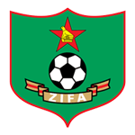
VS赤道几内仅赛程21:00非洲杯预选赛苏丹VS塞内加尔仅赛程
23:00友谊赛Switzerland U18 VS
VS England U18仅赛程
England U18仅赛程
23:00友谊赛科索沃U21VS 卢森堡U21仅赛程
卢森堡U21仅赛程
23:00欧国联哈萨克 VS
VS 斯洛伐克仅赛程
斯洛伐克仅赛程
23:00欧国联法罗群岛 VS
VS 摩尔多瓦仅赛程
摩尔多瓦仅赛程
23:00非洲杯预选赛SomaliaVS加纳仅赛程
01:00欧国联白俄罗斯 VS
VS 阿尔巴尼仅赛程
阿尔巴尼仅赛程
01:00欧国联芬兰 VS
VS 圣马力诺仅赛程
圣马力诺仅赛程
01:30西乙埃尔登斯 VS
VS 萨瓦德尔仅赛程
萨瓦德尔仅赛程
01:30西乙埃瓦尔VS加的斯仅赛程
02:00葡甲雷克索斯VS沙维什仅赛程
03:00玻利维亚职业联…时刻准备VS独立石油仅赛程
03:30乌拉圭甲级联赛达努比奥
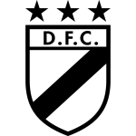
VS蒙得维的亚利物浦仅赛程03:45欧国联克罗地亚 VS
VS 捷克仅赛程
捷克仅赛程
03:45欧国联比利时 VS
VS 意大利仅赛程
意大利仅赛程
03:45欧国联法国 VS
VS 土耳其仅赛程
土耳其仅赛程
03:45欧国联西班牙 VS
VS 英格兰仅赛程
英格兰仅赛程
07:00中北美国家联赛巴拿马VS库拉索仅赛程
07:00乌拉圭甲级联赛防卫者体育VS佩纳罗尔仅赛程
11/15 · 0 场83 场未开赛
09:00中北美国家联赛牙买加VS墨西哥仅赛程
11:00友谊赛新西兰 VS
VS India仅赛程
India仅赛程
12:00日职乙万劳雷八户 VS
VS 磐城仅赛程
磐城仅赛程
12:00日职乙北海道札幌冈萨多 VS
VS 鸟栖沙岩仅赛程
鸟栖沙岩仅赛程
12:05日职乙仙台七夕 VS
VS 秋田蓝色闪电仅赛程
秋田蓝色闪电仅赛程
13:00日职乙FC今治VS 磐田喜悦仅赛程
磐田喜悦仅赛程
13:00日职乙富山胜利 VS德岛漩涡仅赛程
VS德岛漩涡仅赛程
13:00日联杯町田泽维 VS
VS 神户胜利仅赛程
神户胜利仅赛程
14:00日联杯大阪樱花 VS
VS 浦和红钻仅赛程
浦和红钻仅赛程
14:00日联杯鹿岛鹿角 VS
VS 横滨水手仅赛程
横滨水手仅赛程
16:00日联杯柏太阳神 VS
VS 川崎前锋仅赛程
川崎前锋仅赛程
19:00葡甲AmaranteVS费尔盖拉斯仅赛程
19:00葡甲通德拉 VS
VS SC法伦斯仅赛程
SC法伦斯仅赛程
20:00友谊赛Kyrgyzstan VS
VS Vietnam仅赛程
Vietnam仅赛程
21:00友谊赛苏格兰U21 VS美国U21仅赛程
VS美国U21仅赛程
21:00法国杯FC两河82VS特雷利萨克仅赛程
21:00法国杯圣雷南 VS
VS 拉瓦勒仅赛程
拉瓦勒仅赛程
21:00法国杯奥克帕姆VS奥林匹克马尔宽仅赛程
21:00法国杯戈布兰VS 圣旺红星仅赛程
圣旺红星仅赛程
21:00西乙特内里费 VS
VS 休达仅赛程
休达仅赛程
21:30荷乙马斯特里 VS
VS 维特斯仅赛程
维特斯仅赛程
22:00欧国联塞浦路斯 VS
VS 黑山仅赛程
黑山仅赛程
22:00欧国联拉脱维亚 VS
VS 亚美尼亚仅赛程
亚美尼亚仅赛程
22:00法国杯吕米伊VS 圣埃蒂安仅赛程
圣埃蒂安仅赛程
22:00法国杯阿特拉斯VS戛纳仅赛程
22:00葡甲波尔蒂芒斯 VSAcademica仅赛程
VSAcademica仅赛程
23:15西乙格拉纳达 VS
VS 拉斯帕尔马斯仅赛程
拉斯帕尔马斯仅赛程
23:30葡甲佩纳菲耶尔VS 洛罗萨卢西塔尼亚仅赛程
洛罗萨卢西塔尼亚仅赛程
23:30葡甲波尔图B队 VS
VS 托林斯仅赛程
托林斯仅赛程
23:30阿联酋联赛杯伊蒂哈德卡尔巴VS迪拜国民青年仅赛程
23:30阿联酋联赛杯阿尔贾兹拉VS巴尼亚斯仅赛程
00:00法国杯克鲁瓦VS塔昂仅赛程
00:00非洲杯预选赛乌干达VS博茨瓦纳仅赛程
00:30欧洲U17锦标赛预…Denmark U17VSEstonia U17仅赛程
01:00欧国联挪威 VS
VS 威尔士仅赛程
威尔士仅赛程
01:00欧国联格鲁吉亚 VS
VS 匈牙利仅赛程
匈牙利仅赛程
01:00法国杯ASPTT第戎VS塞隆盖仅赛程
01:00法国杯勒图凯VS阿夫朗什仅赛程
01:00法国杯卡昂PTT
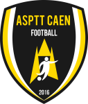
VS尚布利仅赛程01:00法国杯圣布里厄
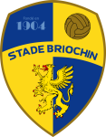
VS鲁昂仅赛程01:00法国杯敦刻尔克VS奎维利仅赛程
01:00法国杯沃苏勒VS弗勒里91仅赛程
01:00法国杯维特尔VS圣皮埃尔米利扎克仅赛程
01:00法国杯蓬蒂维VSTA雷恩仅赛程
01:00法国杯贝桑松竞技VSAPM梅斯仅赛程
01:00法国杯贝蒂讷VS 南锡仅赛程
南锡仅赛程
01:00法国杯里昂杜切尔VS弗尔仅赛程
01:30英乙弗利特伍德VS 特兰米尔仅赛程
特兰米尔仅赛程
01:30西乙阿尔梅里亚 VS
VS FC安道尔仅赛程
FC安道尔仅赛程
01:30西乙马洛卡 VS
VS 科尔多瓦仅赛程
科尔多瓦仅赛程
02:00法国杯卢尔德斯VS 波城仅赛程
波城仅赛程
02:00法国杯布雷叙尔VS沙朗仅赛程
03:00友谊赛Basque Country VS
VS 委内瑞拉仅赛程
委内瑞拉仅赛程
03:00荷乙多德勒支 VS
VS 赫拉克勒仅赛程
赫拉克勒仅赛程
03:00荷乙格拉夫 VS
VS 奥斯仅赛程
奥斯仅赛程
03:00荷乙瓦尔韦克 VS
VS 登博思仅赛程
登博思仅赛程
03:00荷乙罗达JC VS
VS 福伦丹仅赛程
福伦丹仅赛程
03:00荷乙芬洛VSFC埃因霍温仅赛程
03:00荷乙阿尔梅勒 VS
VS 海尔蒙特仅赛程
海尔蒙特仅赛程
03:00非洲杯预选赛阿尔及利VS多哥仅赛程
03:30巴乙克里西乌马 VS
VS 新奥里藏蒂诺仅赛程
新奥里藏蒂诺仅赛程
03:30巴乙圣贝尔纳多 VS
VS 竞技俱乐部仅赛程
竞技俱乐部仅赛程
03:30巴乙尤文图德 VSBotafogo SP仅赛程
VSBotafogo SP仅赛程
03:30巴乙巴西雷加塔斯 VS
VS 塞阿拉仅赛程
塞阿拉仅赛程
03:30巴乙庞特普雷塔 VS铁路工人仅赛程
VS铁路工人仅赛程
03:30巴乙戈亚尼亚竞技 VS
VS 库亚巴仅赛程
库亚巴仅赛程
03:30巴乙福塔莱萨 VS
VS 维拉诺瓦仅赛程
维拉诺瓦仅赛程
03:30巴乙米内罗美洲 VS
VS 阿瓦伊仅赛程
阿瓦伊仅赛程
03:30巴乙累西腓体育VS 戈亚斯仅赛程
戈亚斯仅赛程
03:45欧国联北爱尔兰 VS
VS 乌克兰仅赛程
乌克兰仅赛程
03:45欧国联奥地利 VS
VS 爱尔兰仅赛程
爱尔兰仅赛程
03:45欧国联瑞典 VS
VS 波黑仅赛程
波黑仅赛程
03:45欧国联罗马尼亚 VS
VS 波兰仅赛程
波兰仅赛程
03:45欧国联葡萄牙 VS
VS 丹麦仅赛程
丹麦仅赛程
04:00西乙奥维耶多VS 赫罗纳仅赛程
赫罗纳仅赛程
05:00秘鲁甲级联赛库斯科VS塔尔马ADT仅赛程
05:00秘鲁甲级联赛水晶体育
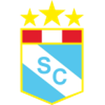
VS西恩夏诺仅赛程05:00秘鲁甲级联赛苏亚纳竞技联盟VS梅尔加仅赛程
05:30中北美国家联赛海地VS 美国仅赛程
美国仅赛程
05:30巴甲米拉索尔 VS
VS 米竞技仅赛程
米竞技仅赛程
06:00阿根廷杯班菲尔德VS 博卡青年仅赛程
博卡青年仅赛程
07:00墨超克雷塔罗 VS
VS 蒙特雷仅赛程
蒙特雷仅赛程
07:30巴甲沙佩科 VS
VS 瓦斯科达伽马仅赛程
瓦斯科达伽马仅赛程
11/14 · 0 场142 场未开赛
09:00友谊赛秘鲁 VS
VS 玻利维亚仅赛程
玻利维亚仅赛程
10:00中北美国家联赛Guatemala 加拿大仅赛程
加拿大仅赛程
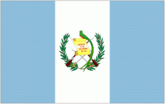
VS13:00日职乙大分三神 VS
VS 枥木城仅赛程
枥木城仅赛程
13:00日职乙大宫松鼠RB VS
VS 山形山神仅赛程
山形山神仅赛程
13:00日职乙新泻天鹅 VS
VS 宫崎惊奇牛鸟仅赛程
宫崎惊奇牛鸟仅赛程
13:00日职乙湘南比马 VS
VS 横滨FC仅赛程
横滨FC仅赛程
13:00日职乙藤枝MYFC VS
VS 甲府风林仅赛程
甲府风林仅赛程
16:00友谊赛泰国23 VS
VS Singapore U23仅赛程
Singapore U23仅赛程
16:00欧洲U17锦标赛预…France U17VS Luxembourg U17仅赛程
Luxembourg U17仅赛程
17:00友谊赛Turkey U18 VS
VS Germany U18仅赛程
Germany U18仅赛程
18:00欧洲U17锦标赛预…Germany U17VSLithuania U17仅赛程
18:00欧洲U17锦标赛预…Slovakia U17VSNetherlands U17仅赛程
18:15友谊赛日本 VS
VS 巴西仅赛程
巴西仅赛程
19:00友谊赛England U18VS Norway U19仅赛程
Norway U19仅赛程
19:00友谊赛Netherlands U18 VSSwitzerland U18仅赛程
VSSwitzerland U18仅赛程
19:30欧洲U17锦标赛预…Belgium U17VS Latvia U17仅赛程
Latvia U17仅赛程
20:00友谊赛中国 VS
VS Malaysia仅赛程
Malaysia仅赛程
20:00友谊赛越南23 VS
VS 卡塔尔23仅赛程
卡塔尔23仅赛程
20:00欧洲U17锦标赛预…Turkey U17 VSHungary U17仅赛程
VSHungary U17仅赛程
20:30英乙埃克塞特 VS
VS 切尔滕汉姆仅赛程
切尔滕汉姆仅赛程
20:50阿联酋联赛杯阿尔达弗拉VS阿治曼仅赛程
21:00欧洲U17锦标赛预…Scotland U17VSAlbania U17仅赛程
21:00法国杯凡尔赛 VS
VS 罗德兹仅赛程
罗德兹仅赛程
21:00西乙巴利亚多利德 VS
VS 卡斯特利翁仅赛程
卡斯特利翁仅赛程
21:30欧洲U17锦标赛预…Norway U17VS
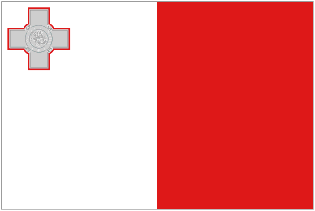
Malta U17仅赛程21:30法国杯布莱 VS
VS 索肖仅赛程
索肖仅赛程
22:00欧国联科索沃 VS
VS 以色列仅赛程
以色列仅赛程
22:00欧洲U17锦标赛预…Poland U17VSEngland U17仅赛程
22:00欧洲U17锦标赛预…Sweden U17VS Finland U17仅赛程
Finland U17仅赛程
23:00友谊赛巴勒斯坦VS伊朗仅赛程
23:00法国杯丰特奈 VS
VS 克莱蒙仅赛程
克莱蒙仅赛程
23:00法国杯夏龙 VS
VS 上里昂仅赛程
上里昂仅赛程
23:00苏冠Stenhousemuir VS
VS 女王公园仅赛程
女王公园仅赛程
23:00苏冠利文斯顿 VS
VS 格里诺克摩顿仅赛程
格里诺克摩顿仅赛程
23:00苏冠帕尔蒂克蓟花 VS
VS Inverness CT仅赛程
Inverness CT仅赛程
23:00苏冠艾尔联 VS
VS 拉茨流浪者仅赛程
拉茨流浪者仅赛程
23:00英乙什鲁斯伯里 VS
VS 奥尔德姆仅赛程
奥尔德姆仅赛程
23:00英乙克鲁 VS
VS 纽波特郡仅赛程
纽波特郡仅赛程
23:00英乙布里斯托尔流浪 VS
VS 切斯特菲尔德仅赛程
切斯特菲尔德仅赛程
23:00英乙斯文登 VS
VS 格里姆仅赛程
格里姆仅赛程
23:00英乙沃尔索尔 VS
VS 巴尼特仅赛程
巴尼特仅赛程
23:00英乙科尔切斯特 VS
VS 吉林汉姆仅赛程
吉林汉姆仅赛程
23:00英乙索尔福德城 VS
VS 北安普敦仅赛程
北安普敦仅赛程
23:00英乙维尔港 VS
VS 阿克灵顿仅赛程
阿克灵顿仅赛程
23:00英乙罗奇代尔 VS
VS 约克城仅赛程
约克城仅赛程
23:00英乙罗瑟汉姆 VS
VS 克劳利仅赛程
克劳利仅赛程
23:00英格兰足总锦标AFC特尔福德VS切尔姆斯福德仅赛程
23:00英格兰足总锦标NewmarketVS牛津城仅赛程
23:00英格兰足总锦标乔利VS巴克斯顿仅赛程
23:00英格兰足总锦标伊斯特本VS切特西仅赛程
23:00英格兰足总锦标伯恩VS布罗姆斯格罗夫仅赛程
23:00英格兰足总锦标利克VS莫克姆仅赛程
23:00英格兰足总锦标多佛VS伯吉斯山仅赛程
23:00英格兰足总锦标奥尔弗里顿VS绍斯波特仅赛程
23:00英格兰足总锦标巴斯城VS特鲁罗仅赛程
23:00英格兰足总锦标布伦特里VS凯特林仅赛程
23:00英格兰足总锦标布里德灵顿VS麦克尔斯菲尔德仅赛程
23:00英格兰足总锦标怀特霍克
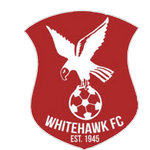
VS汤布里奇仅赛程23:00英格兰足总锦标恩菲尔德VS斯伯丁联仅赛程
23:00英格兰足总锦标拉德克利夫VS马里恩仅赛程
23:00英格兰足总锦标斯彭尼穆尔VS斯卡伯勒仅赛程
23:00英格兰足总锦标梅德斯通联VS梅登黑德仅赛程
23:00英格兰足总锦标梅瑟镇VS哈伯勒仅赛程
23:00英格兰足总锦标比勒里基VS沃尔瑟姆仅赛程
23:00英格兰足总锦标沃克索普VS
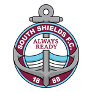
南希尔兹仅赛程23:00英格兰足总锦标沃尔顿赫舍姆VS埃维利仅赛程
23:00英格兰足总锦标法纳姆
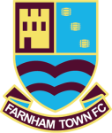
VS埃布斯弗利特仅赛程23:00英格兰足总锦标海利索文VS雷迪奇仅赛程
23:00英格兰足总锦标海德内斯福德VS赫默尔仅赛程
23:00英格兰足总锦标温伯恩 VS阿克斯布里奇仅赛程
VS阿克斯布里奇仅赛程
23:00英格兰足总锦标温盖特芬奇利VS标签联仅赛程
23:00英格兰足总锦标福克斯通VS 克雷仅赛程
克雷仅赛程
23:00英格兰足总锦标索尔兹伯里VS奇切斯特城仅赛程
23:00英格兰足总锦标贝德福德VS切舍姆仅赛程
23:00英格兰足总锦标赫伯恩VS京斯利仅赛程
23:00英格兰足总锦标赫里福德VS布拉克利仅赛程
23:00英格兰足总锦标达格纳姆VS多金仅赛程
23:00英格兰足总锦标达灵顿VS贝里仅赛程
23:00英格兰足总锦标达特福德VSAFC托顿仅赛程
23:00英格兰足总锦标迪德科特VS斯劳仅赛程
23:00英格兰足总锦标金斯林
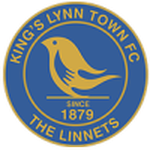
VS斯陶尔布里奇仅赛程23:00英格兰足总锦标阿什顿联VS沃金顿仅赛程
23:00英格兰足总锦标阿夫罗VS切斯特仅赛程
23:00英格兰足总锦标霍舍姆VS托基联仅赛程
23:00英格兰足总锦标韦斯顿VS法恩伯勒仅赛程
23:00英格兰足总锦标韦茅斯VS汉普顿仅赛程
23:00英甲AFC温布尔登 VS
VS 布莱克浦仅赛程
布莱克浦仅赛程
23:00英甲卢顿 VS
VS 剑桥联仅赛程
剑桥联仅赛程
23:00英甲唐卡斯特 VS
VS 莱顿东方仅赛程
莱顿东方仅赛程
23:00英甲威科姆 VS
VS 哈德斯仅赛程
哈德斯仅赛程
23:00英甲布罗姆利 VS
VS 诺茨郡仅赛程
诺茨郡仅赛程
23:00英甲彼得伯勒 VS
VS 牛津联仅赛程
牛津联仅赛程
23:00英甲斯托克波特郡 VS
VS 雷丁仅赛程
雷丁仅赛程
23:00英甲斯蒂夫尼奇 VS
VS 曼斯菲尔德仅赛程
曼斯菲尔德仅赛程
23:00英甲米尔顿 VS
VS 伯顿仅赛程
伯顿仅赛程
23:00英甲维冈 VS
VS 巴恩斯利仅赛程
巴恩斯利仅赛程
23:00英甲莱切斯特 VS
VS 布拉德福仅赛程
布拉德福仅赛程
23:00英甲谢周三 VS
VS 普利茅斯仅赛程
普利茅斯仅赛程
23:15西乙皇家社会B队 VS
VS 希洪体育仅赛程
希洪体育仅赛程
23:30荷乙布雷达 VS
VS 埃门仅赛程
埃门仅赛程
23:30阿联酋联赛杯迪拜连接 VS阿尔纳斯尔仅赛程
VS阿尔纳斯尔仅赛程
00:00U21欧预赛土耳其U21 VS
VS 捷克U21仅赛程
捷克U21仅赛程
00:00非洲杯预选赛佛得角VS利比里亚仅赛程
00:00非洲杯预选赛加蓬VSLesotho仅赛程
00:00非洲杯预选赛南非VSKenya仅赛程
00:00非洲杯预选赛尼日利亚VS坦桑尼亚仅赛程
00:00非洲杯预选赛布基纳VS毛里塔尼亚仅赛程
00:00非洲杯预选赛突尼斯VSLibya仅赛程
00:15U21欧预赛芬兰U21 VS
VS 爱尔兰U21仅赛程
爱尔兰U21仅赛程
00:30友谊赛波兰U21VS挪威U21仅赛程
01:00友谊赛德国U21 VS
VS 比利时U21仅赛程
比利时U21仅赛程
01:00欧国联摩尔多瓦VS哈萨克仅赛程
01:30U21欧预赛丹麦U21 VS
VS 荷兰U21仅赛程
荷兰U21仅赛程
01:30友谊赛法国U21 VS
VS 意大利U21仅赛程
意大利U21仅赛程
02:00友谊赛Albania U21 VS卢森堡U21仅赛程
VS卢森堡U21仅赛程
02:00友谊赛约旦 VS
VS 印度尼西亚已取消
印度尼西亚已取消
02:00友谊赛西班牙U21 VS日本U21仅赛程
VS日本U21仅赛程
03:00中北美国家联赛BermudaVS圣卢西亚仅赛程
03:00中北美国家联赛Puerto RicoVSDominica仅赛程
03:00友谊赛Chile U20 VS
VS Mexico U20仅赛程
Mexico U20仅赛程
03:00法国杯圣菲尔贝尔 VS
VS 罗切VF仅赛程
罗切VF仅赛程
03:00法国杯第戎 VS
VS 奥尔良仅赛程
奥尔良仅赛程
03:00非洲杯预选赛埃及VSMalawi仅赛程
03:00非洲杯预选赛马里VSRwanda仅赛程
03:30友谊赛英格兰U21 VS
VS 葡萄牙U21仅赛程
葡萄牙U21仅赛程
03:30西乙莱加内斯 VS
VS 布尔戈斯仅赛程
布尔戈斯仅赛程
03:45欧国联保加利亚 VS
VS 冰岛仅赛程
冰岛仅赛程
03:45欧国联列支敦士登 VS
VS 阿塞拜疆仅赛程
阿塞拜疆仅赛程
03:45欧国联卢森堡 VS
VS 爱沙尼亚仅赛程
爱沙尼亚仅赛程
03:45欧国联塞尔维亚 VS
VS 德国仅赛程
德国仅赛程
03:45欧国联安道尔 VS
VS 直布罗陀仅赛程
直布罗陀仅赛程
03:45欧国联斯洛伐克VS法罗群岛仅赛程
03:45欧国联斯洛文尼 VS
VS 瑞士仅赛程
瑞士仅赛程
03:45欧国联苏格兰 VS
VS 北马其顿仅赛程
北马其顿仅赛程
03:45欧国联荷兰 VS
VS 希腊仅赛程
希腊仅赛程
04:00中北美国家联赛GrenadaVS圣基茨和尼维斯仅赛程
04:00乌拉圭甲级联赛蒙得维的亚城力矩VS蒙得维的亚竞技仅赛程
04:00非洲杯预选赛摩洛哥VSNiger仅赛程
07:00中北美国家联赛Saint MartinVSEl Salvador仅赛程
07:00友谊赛阿根廷 VS
VS 乌拉圭仅赛程
乌拉圭仅赛程
08:00友谊赛厄瓜多尔 VS
VS 哥斯达仅赛程
哥斯达仅赛程
08:00友谊赛哥伦比亚 VS
VS 智利仅赛程
智利仅赛程
11/13 · 0 场31 场未开赛
19:00友谊赛Czech Republic U18VSPoland U18仅赛程
20:00友谊赛Chinese Taipei VSKyrgyzstan仅赛程
VSKyrgyzstan仅赛程
20:00友谊赛新加坡 VS
VS 巴拉圭仅赛程
巴拉圭仅赛程
21:00非洲杯预选赛科摩罗VSCongo仅赛程
21:00非洲杯预选赛赞比亚VSBurundi仅赛程
22:00友谊赛KuwaitVSSyria仅赛程
22:10友谊赛United Arab Emirates VS
VS 洪都拉斯仅赛程
洪都拉斯仅赛程
22:30友谊赛沙特阿拉伯 VS
VS 韩国仅赛程
韩国仅赛程
22:45友谊赛卡塔尔 VS
VS 澳大利亚仅赛程
澳大利亚仅赛程
00:00非洲杯预选赛MadagascarVSGuinea-Bissau仅赛程
00:00非洲杯预选赛几内亚VSEritrea仅赛程
00:00非洲杯预选赛刚果(金)VSSierra Leone仅赛程
00:00非洲杯预选赛赤道几内VS津巴布韦仅赛程
01:00友谊赛立陶宛 VS
VS 苏里南仅赛程
苏里南仅赛程
01:00欧国联亚美尼亚VS塞浦路斯仅赛程
01:00欧国联土耳其VS比利时仅赛程
02:00国王杯纳瓦卡内罗 VS
VS 皇家贝蒂斯仅赛程
皇家贝蒂斯仅赛程
02:00法国杯尚贝里 VS
VS 格勒诺布仅赛程
格勒诺布仅赛程
03:00非洲杯预选赛喀麦隆VSNamibia仅赛程
03:00非洲杯预选赛塞内加尔VS苏丹仅赛程
03:00非洲杯预选赛科特迪瓦VSGambia仅赛程
03:00非洲杯预选赛贝宁VSCentral African Republic仅赛程
03:45欧国联圣马力诺VS白俄罗斯仅赛程
03:45欧国联意大利VS法国仅赛程
03:45欧国联捷克VS西班牙仅赛程
03:45欧国联英格兰VS克罗地亚仅赛程
03:45欧国联阿尔巴尼VS芬兰仅赛程
03:45欧国联黑山VS拉脱维亚仅赛程
05:00哥伦比亚甲级联赛麦德林国民竞技VS卡尔达斯仅赛程
06:00中北美国家联赛Aruba
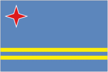
VSMartinique仅赛程08:30中北美国家联赛库拉索VS巴拿马仅赛程
11/12 · 0 场13 场未开赛
14:00友谊赛新西兰VSIndia仅赛程
16:00友谊赛泰国23VS卡塔尔23仅赛程
20:00友谊赛Singapore U23VS越南23仅赛程
21:00U21欧预赛冰岛U21 VS
VS 希腊U21仅赛程
希腊U21仅赛程
21:00友谊赛苏格兰U21VS 乌克兰U21仅赛程
乌克兰U21仅赛程
23:00友谊赛乌兹别克 VS
VS 俄罗斯仅赛程
俄罗斯仅赛程
23:00非洲杯预选赛加纳VSSomalia仅赛程
01:00捷克杯Artis VS
VS 亚布洛内茨仅赛程
亚布洛内茨仅赛程
03:00欧洲U17锦标赛预…Ukraine U17VSPoland U17仅赛程
03:00英锦赛巴恩斯利VS奥尔德姆仅赛程
03:00英锦赛谢周三VS阿克灵顿仅赛程
06:00巴乙隆德里纳VS 累西腓航海仅赛程
累西腓航海仅赛程
07:00玻利维亚职业联…独立石油VS时刻准备仅赛程
11/11 · 2 场36 场未开赛
09:30哥伦比亚杯卡尔达斯VS麦德林国民竞技仅赛程
16:00欧洲U17锦标赛预…Luxembourg U17VS Italy U17仅赛程
Italy U17仅赛程
17:00欧洲U17锦标赛预…Hungary U17VSNorth Macedonia U17仅赛程
18:00日联杯川崎前锋VS柏太阳神仅赛程
18:00日联杯横滨水手VS鹿岛鹿角仅赛程
18:00日联杯神户胜利VS町田泽维仅赛程
18:00欧洲U17锦标赛预…Latvia U17VS Croatia U17仅赛程
Croatia U17仅赛程
18:00欧洲U17锦标赛预…Netherlands U17VSNorway U17仅赛程
18:30日联杯浦和红钻VS大阪樱花仅赛程
19:00欧洲U17锦标赛预…Republic of Ireland U17VSEstonia U17仅赛程
20:00友谊赛VietnamVSChinese Taipei仅赛程
21:00欧洲U17锦标赛预…Sweden U17VSAlbania U17仅赛程
21:30欧洲U17锦标赛预…Slovakia U17VSMalta U17仅赛程
22:00友谊赛England U18VSNetherlands U18仅赛程
22:00友谊赛Switzerland U18VSNorway U19仅赛程
22:00欧洲U17锦标赛预…Finland U17VSScotland U17仅赛程
23:30欧洲U17锦标赛预…Lithuania U17VS Northern Ireland U17仅赛程
Northern Ireland U17仅赛程
03:00周三005英锦标赛谢周三VS阿克宁顿待分析
03:00周三006英锦标赛巴恩斯利VS奥德汉姆待分析
03:00英锦赛伯顿VS诺茨郡仅赛程
03:00英锦赛克鲁VS维冈仅赛程
03:00英锦赛北安普敦VS吉林汉姆仅赛程
03:00英锦赛哈德斯VS 利物浦 U21仅赛程
利物浦 U21仅赛程
03:00英锦赛巴尼特VS莱顿东方仅赛程
03:00英锦赛布里斯托尔流浪VS雷丁仅赛程
03:00英锦赛斯托克波特郡VS特兰米尔仅赛程
03:00英锦赛斯蒂夫尼奇VS 富勒姆 U21仅赛程
富勒姆 U21仅赛程
03:00英锦赛普利茅斯VS斯文登仅赛程
03:00英锦赛曼斯菲尔德VS切斯特菲尔德仅赛程
03:00英锦赛格里姆VS 诺丁汉森林 U21仅赛程
诺丁汉森林 U21仅赛程
03:00英锦赛牛津联VS切尔滕汉姆仅赛程
03:00英锦赛莱切斯特VS沃尔索尔仅赛程
03:30乌拉圭杯波士顿河VS蒙得维的亚城力矩仅赛程
03:30英锦赛布拉德福VS约克城仅赛程
03:30英锦赛布罗姆利VS米尔顿仅赛程
08:00乌拉圭杯蒙得维的亚利物浦VS尤文图德仅赛程
11/10 · 2 场13 场今日
16:00友谊赛卡塔尔23VSSingapore U23仅赛程
20:00友谊赛越南23VS泰国23仅赛程
02:00丹甲Hvidovre VS
VS Aarhus Fremad仅赛程
Aarhus Fremad仅赛程
02:00挪超克里斯蒂 VS
VS 瓦勒伦加仅赛程
瓦勒伦加仅赛程
02:00罗甲博托沙尼 VS
VS 加拉茨钢铁仅赛程
加拉茨钢铁仅赛程
03:00周二001英锦标赛伯顿03:30英足总杯普利茅斯大道 VS
VS 伯克姆斯特德仅赛程
伯克姆斯特德仅赛程
03:30西乙拉斯帕尔马斯VS埃尔登斯仅赛程
03:30西乙萨瓦德尔VS皇家社会B队仅赛程
04:15葡甲托林斯VS 莱里亚仅赛程
莱里亚仅赛程
06:30巴拉圭甲级联赛卢克尼奥体育VS五月二日仅赛程
08:30玻利维亚甲级联赛奥罗拉VS温托大学仅赛程
11/08 · 30 场30 场
—周日001日职联町田泽维VS 广岛三箭客胜1-10-0 未中—周日002韩K联首尔FC
广岛三箭客胜1-10-0 未中—周日002韩K联首尔FC VS
VS 蔚山现代主胜2-21-2 未中—周日003澳超阿德莱德
蔚山现代主胜2-21-2 未中—周日003澳超阿德莱德 VS
VS 墨胜利客胜1-12-2 未中—周日004日职联大阪钢巴
墨胜利客胜1-12-2 未中—周日004日职联大阪钢巴 VS大阪樱花主胜1-12-3 未中—周日005韩K联江原FC
VS大阪樱花主胜1-12-3 未中—周日005韩K联江原FC VS
VS 全北现代主胜1-13-2 中—周日006意甲那不勒斯
全北现代主胜1-13-2 中—周日006意甲那不勒斯 VS
VS 拉齐奥主胜1-11-1 未中—周日007西甲埃尔切
拉齐奥主胜1-11-1 未中—周日007西甲埃尔切 VS贝蒂斯客胜1-10-2 中—周日008芬超库奥皮奥
VS贝蒂斯客胜1-10-2 中—周日008芬超库奥皮奥 VS
VS 国际图客胜0-00-2 中—周日009荷甲特温特
国际图客胜0-00-2 中—周日009荷甲特温特 VS
VS 阿贾克斯主胜1-12-2 未中—周日010挪超特罗姆瑟
阿贾克斯主胜1-12-2 未中—周日010挪超特罗姆瑟 VS
VS 博德闪耀客胜1-20-2 中—周日011英超桑德兰
博德闪耀客胜1-20-2 中—周日011英超桑德兰 VS
VS 切尔西客胜1-11-0 未中—周日012英超伊普斯
切尔西客胜1-11-0 未中—周日012英超伊普斯 VS
VS 伯恩茅斯客胜1-11-2 中—周日013英超水晶宫
伯恩茅斯客胜1-11-2 中—周日013英超水晶宫 VS
VS 利物浦客胜1-21-3 中—周日014意甲蒙扎
利物浦客胜1-21-3 中—周日014意甲蒙扎 VS
VS 亚特兰大客胜1-10-1 中—周日015意甲热那亚
亚特兰大客胜1-10-1 中—周日015意甲热那亚 VS
VS AC米兰客胜0-11-2 中—周日016德甲科隆
AC米兰客胜0-11-2 中—周日016德甲科隆 VS
VS 勒沃库森客胜1-21-2 中—周日017西甲皇家社会
勒沃库森客胜1-21-2 中—周日017西甲皇家社会 VS
VS 巴列卡诺主胜1-11-0 中—周日018瑞超索尔纳
巴列卡诺主胜1-11-0 中—周日018瑞超索尔纳 VS
VS 赫根客胜1-13-2 未中—周日019荷甲阿尔克马
赫根客胜1-13-2 未中—周日019荷甲阿尔克马 VS
VS 格罗宁根主胜2-14-3 中—周日020法甲勒芒
格罗宁根主胜2-14-3 中—周日020法甲勒芒 VS
VS 摩纳哥客胜0-11-1 未中—周日021英超曼联
摩纳哥客胜0-11-1 未中—周日021英超曼联 VS
VS 维拉主胜1-14-4 未中—周日022德甲弗赖堡
维拉主胜1-14-4 未中—周日022德甲弗赖堡 VS
VS 柏林联合主胜2-02-0 中—周日023意甲国际米兰
柏林联合主胜2-02-0 中—周日023意甲国际米兰 VS
VS 科莫主胜2-22-0 中—周日024西甲比利亚雷
科莫主胜2-22-0 中—周日024西甲比利亚雷 VS
VS 赫塔费主胜1-02-0 中—周日025西甲塞尔塔
赫塔费主胜1-02-0 中—周日025西甲塞尔塔 VS
VS 莱万特主胜1-10-0 未中—周日026葡超吉马良斯
莱万特主胜1-10-0 未中—周日026葡超吉马良斯 VS
VS 波尔图客胜1-21-2 中—周日027德甲霍芬海姆
波尔图客胜1-21-2 中—周日027德甲霍芬海姆 VS
VS 沙尔克04主胜2-12-1 中—周日028意甲佛罗伦萨
沙尔克04主胜2-12-1 中—周日028意甲佛罗伦萨 VS
VS 尤文图斯客胜1-12-2 未中—周日029法甲朗斯
尤文图斯客胜1-12-2 未中—周日029法甲朗斯 VS
VS 马赛主胜1-11-2 未中—周日030西甲马竞
马赛主胜1-11-2 未中—周日030西甲马竞 VS
VS 巴萨客胜1-21-2 中
巴萨客胜1-21-2 中
11/07 · 30 场30 场
—周六001日职联横滨水手VS 冈山绿雉主胜1-11-1 未中—周六002日职乙鸟栖沙岩VS富山胜利客胜1-11-2 中—周六003日职联柏太阳神VS川崎前锋主胜1-12-1 中—周六004韩K联金泉尚武
冈山绿雉主胜1-11-1 未中—周六002日职乙鸟栖沙岩VS富山胜利客胜1-11-2 中—周六003日职联柏太阳神VS川崎前锋主胜1-12-1 中—周六004韩K联金泉尚武 VS
VS 安养FC主胜1-11-0 中—周六005澳超珀斯
安养FC主胜1-11-0 中—周六005澳超珀斯 VS
VS 纽喷气机主胜2-12-1 中—周六006英超利兹联
纽喷气机主胜2-12-1 中—周六006英超利兹联 VS
VS 热刺客胜1-11-0 未中—周六007英冠朴次茅斯
热刺客胜1-11-0 未中—周六007英冠朴次茅斯 VS
VS 斯托克城主胜1-11-2 未中—周六008西甲马拉加
斯托克城主胜1-11-2 未中—周六008西甲马拉加 VS
VS 桑坦德主胜1-11-2 未中—周六009意甲都灵
桑坦德主胜1-11-2 未中—周六009意甲都灵 VS
VS 莱切主胜1-11-1 未中—周六010意甲卡利亚里
莱切主胜1-11-1 未中—周六010意甲卡利亚里 VS
VS 弗洛西诺客胜1-11-0 未中—周六011德甲莱红牛
弗洛西诺客胜1-11-0 未中—周六011德甲莱红牛 VS
VS 奥格斯堡主胜2-15-2 中—周六012德甲帕德博恩
奥格斯堡主胜2-15-2 中—周六012德甲帕德博恩 VS
VS 法兰克福客胜1-12-2 未中—周六013德甲多特蒙德
法兰克福客胜1-12-2 未中—周六013德甲多特蒙德 VS
VS 埃沃斯堡主胜2-02-1 中—周六014德甲美因茨
埃沃斯堡主胜2-02-1 中—周六014德甲美因茨 VS
VS 拜仁客胜1-21-2 中—周六015英超阿森纳
拜仁客胜1-21-2 中—周六015英超阿森纳 VS
VS 赫尔城主胜1-01-0 中—周六016英超富勒姆
赫尔城主胜1-01-0 中—周六016英超富勒姆 VS
VS 纽卡斯尔主胜1-11-1 未中—周六017英冠伯明翰
纽卡斯尔主胜1-11-1 未中—周六017英冠伯明翰 VS
VS 斯旺西主胜1-12-1 中—周六018挪超克里斯蒂VS瓦勒伦加客胜1-1待开赛—周六019西甲西班牙人
斯旺西主胜1-12-1 中—周六018挪超克里斯蒂VS瓦勒伦加客胜1-1待开赛—周六019西甲西班牙人 VS
VS 拉科主胜1-10-0 未中—周六020荷甲福图纳
拉科主胜1-10-0 未中—周六020荷甲福图纳 VS
VS 斯达主胜1-12-2 未中—周六021瑞超代格福什
斯达主胜1-12-2 未中—周六021瑞超代格福什 VS
VS 盖斯客胜1-11-2 中—周六022意甲帕尔马
盖斯客胜1-11-2 中—周六022意甲帕尔马 VS
VS 博洛尼亚客胜0-11-2 中—周六023英超诺丁汉
博洛尼亚客胜0-11-2 中—周六023英超诺丁汉 VS
VS 曼城客胜0-13-1 未中—周六024德甲斯图加特
曼城客胜0-13-1 未中—周六024德甲斯图加特 VS
VS 不来梅主胜1-11-0 中—周六025西甲奥萨苏纳
不来梅主胜1-11-0 中—周六025西甲奥萨苏纳 VS
VS 毕尔巴鄂客胜1-11-1 未中—周六026法甲欧塞尔
毕尔巴鄂客胜1-11-1 未中—周六026法甲欧塞尔 VS
VS 巴黎FC客胜0-10-1 中—周六027葡超阿尔维卡
巴黎FC客胜0-10-1 中—周六027葡超阿尔维卡 VS
VS 卡萨皮亚主胜1-01-1 未中—周六028意甲罗马
卡萨皮亚主胜1-01-1 未中—周六028意甲罗马 VS
VS 萨索洛主胜2-03-0 中—周六029巴西杯米竞技VS
萨索洛主胜2-03-0 中—周六029巴西杯米竞技VS 格雷米奥主胜1-01-1 未中—周六030美职联盐湖城
格雷米奥主胜1-01-1 未中—周六030美职联盐湖城 VS
VS 洛城银河主胜1-12-1 中
洛城银河主胜1-12-1 中
11/06 · 14 场14 场
—周五001澳超悉尼FC VS
VS 中央海岸主胜1-04-1 中—周五002德乙不伦瑞克
中央海岸主胜1-04-1 中—周五002德乙不伦瑞克 VS
VS 科特布斯主胜1-10-0 未中—周五003瑞超哈马比
科特布斯主胜1-10-0 未中—周五003瑞超哈马比 VS
VS 埃夫斯堡主胜2-04-1 中—周五004法乙蒙彼利埃
埃夫斯堡主胜2-04-1 中—周五004法乙蒙彼利埃 VS
VS 梅斯主胜1-12-3 未中—周五005荷甲威廉二世
梅斯主胜1-12-3 未中—周五005荷甲威廉二世 VS
VS 兹沃勒客胜1-11-1 未中—周五006荷乙奥斯VS瓦尔韦克客胜1-11-1 未中—周五007德甲汉堡
兹沃勒客胜1-11-1 未中—周五006荷乙奥斯VS瓦尔韦克客胜1-11-1 未中—周五007德甲汉堡 VS
VS 门兴主胜1-13-1 中—周五008意甲威尼斯
门兴主胜1-13-1 中—周五008意甲威尼斯 VS
VS 乌迪内斯主胜1-12-1 中—周五009法甲图卢兹
乌迪内斯主胜1-12-1 中—周五009法甲图卢兹 VS
VS 斯特拉斯主胜1-13-1 中—周五010英超埃弗顿
斯特拉斯主胜1-13-1 中—周五010英超埃弗顿 VS
VS 考文垂主胜1-03-1 中—周五011英冠德比郡
考文垂主胜1-03-1 中—周五011英冠德比郡 VS
VS 博尔顿主胜1-13-1 中—周五012西甲塞维利亚
博尔顿主胜1-13-1 中—周五012西甲塞维利亚 VS
VS 阿拉维斯主胜1-10-0 未中—周五013葡超法马利康
阿拉维斯主胜1-10-0 未中—周五013葡超法马利康 VS
VS 阿罗卡主胜1-11-0 中—周五014巴甲维多利亚
阿罗卡主胜1-11-0 中—周五014巴甲维多利亚 VS
VS 弗鲁米嫩客胜1-10-3 中
弗鲁米嫩客胜1-10-3 中